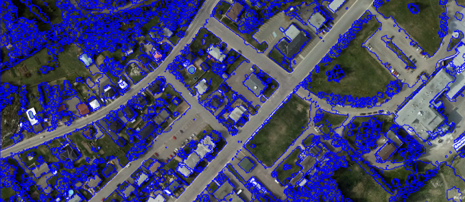
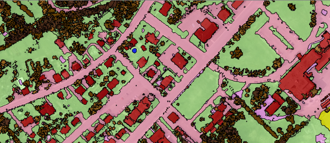
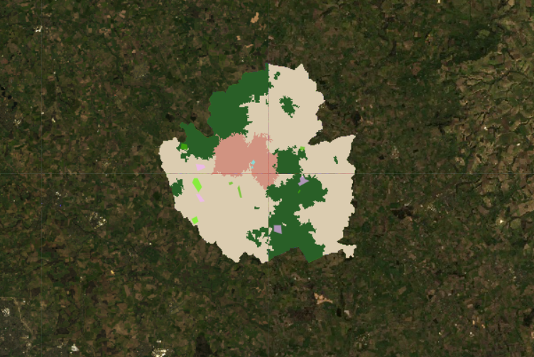
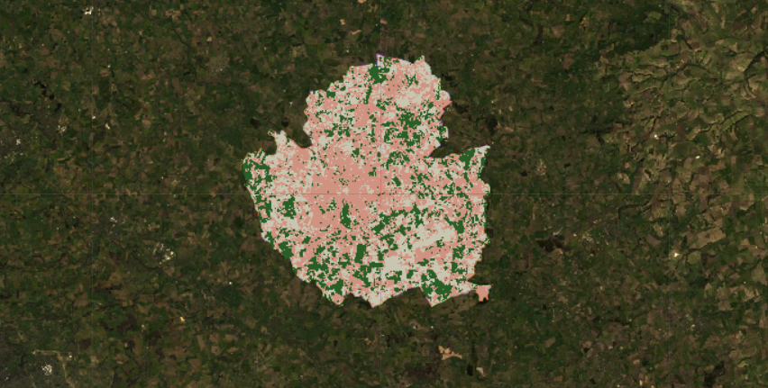
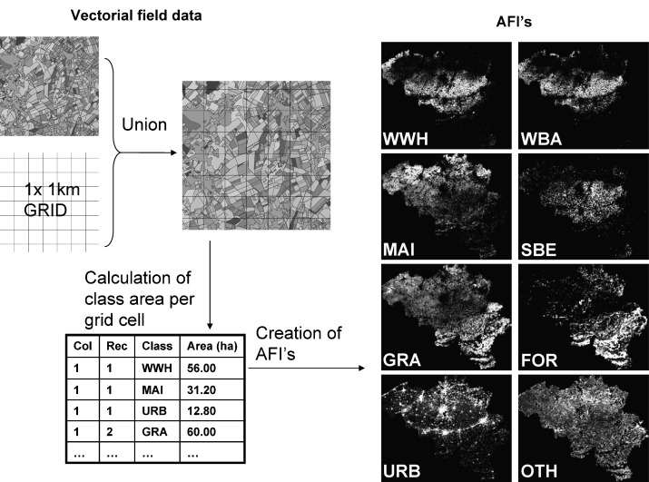
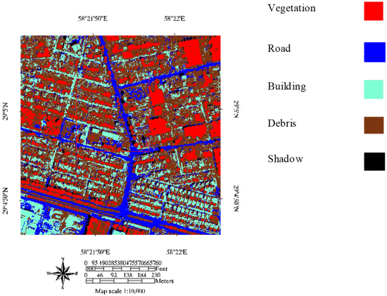
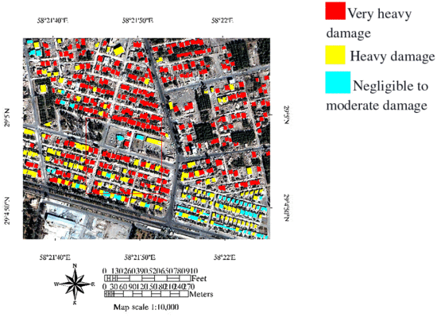

9 week_8
9.1 Summary
9.1.1 Object-Based Image Analysis (OBIA)
OBIA shifts focus from individual pixels to shapes or superpixels, based on their homogeneity (similarity) or heterogeneity (difference). SLIC (Simple Linear Iterative Clustering) is a common method for generating superpixels, analyzing spatial and color distances to define groups. Iterative process, typically 4-10 rounds, refines superpixel centers and boundaries, similar to k-means. Uses LAB color space for nuanced color analysis, classifying objects based on average values for interpretation.
 Figure from (Geography 2024)
OBIA segmentation is a process that groups similar pixels into objects.
 Figure from (Geography 2024)
OBIA classification uses shape, size, and spectral properties of objects to classify each object.
9.1.2 OBIA workshop

pink: urban; light yellow: grass; gray: bare earth; green: forest
This is the OBIA map, with the training data of urban, grass, bare earth and forest, the training group is shown on the map (blue: urban, green: grass, light green: forest, purple: bare earth), but it is obvious that the output is not following the samples being given.
I have tried to change the value of connectivity of 4 and 8 and followed 8 as at the start. I also changed the value of neighbourhood to 40 from 50, as a larger neighborhood size means that each segment will be influenced by a larger area around it, potentially leading to larger and smoother segments, but we want it to be smaller and contain more detailed as what sub-pixel analysis indicate
9.1.3 Sub pixel analysis
Allows us to deconstruct the observed spectral data of a pixel into its constituent materials, giving us a clearer understanding of what is present on the ground in that area.
The process involves comparing the spectral reflectance values of each pixel in a satellite image to the specific known spectral signatures of specific landcover types, called end members (like water, vegetation, soil). The algorithm estimates the proportion of each earth surface type as well as the main surface type within a pixel, based on to what extent its reflectance matches these end members. This method helps to accurately identify and quantify the components of the land surface in each pixel, enhancing the understanding of the area’s ground conditions.
9.1.4 Sub pixel workshop

pink: urban; light yellow: grass; gray: bare earth; green: forest
This contains more details than OBIA image, the performance is well. Compared with the result from last week, the texture of urban is basically the same, but it shows more bare earth.
9.1.5 Accuracy assessment
In machine learning is a process to evaluate how well a model’s predictions match the actual reality
True Positive (TP): The model correctly predicts the positive class.
False Positive (FP): The model incorrectly predicts the positive class.
True Negative (TN): The model correctly predicts the negative class.
False Negative (FN): The model incorrectly predicts the negative class.
Accuracy assessment is can be divided into
producer’s accuracy
\[ \frac{TP}{TP+FN}\]
user’s accuracy
\[ \frac{TP}{TP+FP}\]
overall accuracy
\[ \frac{TP+TN}{TP+TN+FP+FN}\]
There is trade-off between producer’s accuracy and consumer’s accuracy, because improving one can often lead to a decrease in another. It is to say, for example, producer accuracy ensures we capture as much of “the true area of interest”forest” as possible, even if we include some wrong areas. Consumer accuracy ensures that what we identify as “the area of interest”forest” is definitely correct, even if we miss some of them. Balancing these depends on whether we prioritize not missing any true areas or being right when we identify an area.
9.1.6 Receiver Operating Characteristic Curve (ROC)
Developed during WW2 by the USA to enhance radar signal detection, aiming to identify aircraft (true positives) while minimizing false alarms (false positives) from other objects like clouds. The aim is to maximize true positives while minimizing false positives.
A perfect model scores 1, while a random guess scores 0.5, the higher the AUC, the better the model is at predicting true positives
9.1.7 Cross validation and spatial autocorrelation.
When we’re working with data in geography or maps, we usually divide our data into two parts: one part to learn from (train) and another part to see how well we’ve learned (test). However, there’s an important idea by Waldo Tobler, called the “First Law of Geography,” which says that things that are closer to each other are more alike than things that are far apart. This means when we’re training our model, if the training data includes information that’s very close to the test data, it might provide ‘sneak peek’ because the training data shouldn’t know anything about the test data.
9.2 Application
This week’s application will focus on OBIA and sub-pixel analysis.
9.2.1 Application 1
In the case study (Verbeiren et al. 2008), sub-pixel classification was used to estimate regional crop areas in Belgium using low-resolution SPOT-VEGETATION NDVI images. It proved effective for generating reliable area estimates in regions with limited high-resolution data.

Figure from (Verbeiren et al. 2008)
These AFIs (area fraction images) have the same 1 km resolution as the satellite images and they give for each pixel the area fraction occupied by the considered classes (per pixel, the fractions sum up to 1). The procedure for the AFI-creation is outlined in the picture. First, a 1 km × 1 km grid was created with the same spatial characteristics (projection, resolution, framing) as the NDVI-images. This grid was superimposed over the vectorial land use map, and the area fractions of the eight classes (Winter wheat, Winter barley, All maize, Sugar beets, All grassland, All forests, Urban areas, and All other vegetation) within each grid cell were computed and stored in a database. The latter numbers were then transferred to eight separate images: the (reference) AFIs.
9.2.2 Application 2
Object - based image analysis (OBAI) is also very useful. Building damage detection after earthquake would help to rapid relief and response of disaster. In this study (Janalipour and Mohammadzadeh 2016), an efficient method was proposed for building damage detection in urban area after earthquake using pre-event vector map and postevent pan-sharpened high spatial resolution image. At first, preprocessing was applied on the post-event satellite image. Second, results of pixel- and object-based classifications were integrated. In the following, geometric features of buildings were extracted including area, rectangular fit, and convexity.
After a series of image analysis, we are able to define the category of the land as well as the degree of damage.

Figures from (Janalipour and Mohammadzadeh 2016)
9.2.3 Application reflection
Sub-pixel classification with low-resolution NDVI images was used for crop area estimation in Belgium and OBIA for post-earthquake building damage detection. These methods enabled precise environmental and damage assessments, showing the value of different remote sensing techniques for land and structural analysis. OBIA is more useful for detailed, high-resolution tasks like detecting building damage after earthquakes, where precise object delineation and classification are crucial. Sub-pixel analysis is useful for estimating large-scale land areas, like crops, using low-resolution images, especially in regions that are lack of high-resolution data.
9.3 Reflection
Reflecting on my learning journey through this week, I’ve learned many image analysis techniques, notably Object-Based Image Analysis (OBIA) and sub-pixel analysis. The OBIA method, groups pixels into objects based on their spectral, spatial, and textural characteristics, I found it particularly useful in areas like land use classification. Sub-pixel analysis helped me understand image analysis further by breaking down the spectral signatures within a pixel, thereby providing a clearer picture of the ground realities.
It is interesting to see how the result of OBIA and sub-pixel analysis show a large difference from the study of workshop. It was enlightening to see how famous concepts like the “First Law of Geography” plays an important role in practical sections like cross-validation, impacting models’ reliability.
Overall, this class deepened my knowledge of the image analysis techniques and their practical implications in environmental monitoring and disaster management.